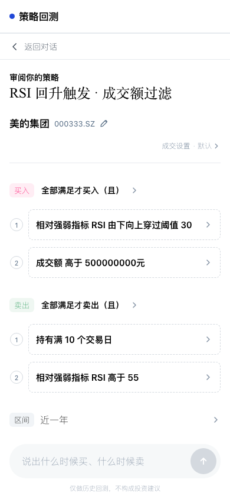

让投资想法
变成可核对的历史实验
A股自然语言策略回测阶段汇报
领导速读正文＋可点击技术与验收附录
让投资想法变成可核对的历史实验
已完成免登录公网 MVP，当前支持单只 A 股、多条件、日线、只做多的历史回测，10 项指标可执行。用户从自然语言进入可审阅规则，得到由 Python 计算、可追溯的报告。
本阶段解决的是“不会写代码也能检验策略”的门槛，而非替用户承诺收益。模型把口语转为可执行候选；工程系统约束能力边界、读取真实数据、逐日模拟交易并计算指标；模型最后只解释已核验的结果。
设计目标是让用户始终知道三件事：系统理解了什么、现在正在做什么、结果能说明什么。由此形成“表达想法—审阅规则—可见进度—查看结果—修改再验证”的闭环。
推进方式分三步：先从用户反馈中确认交互问题并提供预览；再把已确认方案接入原有模型、数据和回测模块，做定向本地验证；最后以明确源包统一发布，并在匿名公网复核真实运行。不是重新搭一套演示替代原系统。
| 用户原来的困难 | 本版应对 |
|---|---|
| 一句话容易被误解，改局部条件会丢上下文 | 股票、条件、且／或和区间结构化展示；支持原位及局部编辑 |
| 等待时看见空白或失败，不知道是否还在处理 | 最新真实状态与返回文本共用自适应滚动区；明确重试与终态 |
| 数字和解释混在一起，不知道收益由谁计算 | Python 计算结果与模型解读分层，报告绑定具体运行和结果哈希 |
围绕五个关键时刻完成体验闭环
先让规则看得懂、改得动，再让等待和结果可解释。
入口保留不同流派的自然语言策略示例；没有指定股票时，按策略方向提供真实候选与来源，不额外增加“我自己选股票”的无效选项。全 A 股名称与代码在前端本地联想，选中后直接替换，不必跳回聊天框。
审阅页保留买入／卖出条件编号和虚线容器，将“全部满足”与“任意触发”作为显式可修改关系；每项条件进入参数编辑，区间采用轻量入口，标题提炼 RSI、量价等关键词，不复述整段规则。
等待区默认展开，有阶段短语就显示最新短语，有模型返回文本就显示实际返回；最高 160px 内滚动，用户上翻时不强拉到底。手机受理回测后回到对话看进度，报告页导航与长标题分行。

条件逐项展示；全部满足与任意触发明确可见；股票与区间可直接修改。
004 公网实际审阅界面，展示参数修改前的 RSI 30；验收中随后改为 35 并重新运行。截图为移动尺寸 Chromium，不代表微信真机已验收。模型负责理解与解释，工程负责事实与计算
回测不是让模型心算收益，也不运行模型临时编写的任意脚本。
01 用户界面
02 模型层
03 工程与 Python
04 数据层
前端使用 React／TypeScript；FastAPI 接收请求，模型输出受约束的结构化候选，经过指标目录、参数、股票与原文一致性校验后形成策略版本。用户审阅确认后，独立 Python 回测服务读取行情和指标，计算逐日净值、成交与统计。
当前配置以 DeepSeek-v4-flash 做候选解析等轻任务，以 DeepSeek-v4-pro 做复杂规划与报告解读；报告解读的 Pro 模型在公网结果中有实际来源记录。Claude 风格仅用于本汇报的图形呈现，不是产品运行基模。
数据来自东方财富选股／查数链路；部分日线指标由 Python 基于已校验行情推导。缓存降低重复读取，不替代来源校验；报告解读只能引用绑定本次结果的事实。
闭环已经跑通，下一步先补稳定性
成功案例证明链路可用，不证明策略有效，更不等于全部场景已覆盖。
005 已公开免登录、承接全部流量，保留004已有能力。004真实公网案例中，美的集团 RSI 阈值从30改为35，保留“持有满10个交易日且RSI高于55”后回测成功；报告解读的结果哈希与运行一致，实际返回文本和160px滚动已验证。
该案例策略收益 7.40%，同股持有收益 20.55%，超额收益为 −13.15 个百分点，最大回撤 −6.85%；仅 2 个完整交易回合，即使胜率显示 100%，也不能形成稳健性或盈利结论。
005公网并发验证通过：旧报告分析中，两位客户换股及新回测均完成；原报告最终仍绑定原结果，思考返回与160px滚动保留。尚无真实用户转化、P95时长和单次成本基线，不能用样本成功替代业务成效。
| 先后顺序 | 下一阶段工作与判断标准 |
|---|---|
| 立即处理 | 继续修复手机回首页重选恢复和模型解析失败 |
| 分级核验 | P0核对长历史字段、指标逐点与新闻来源；P1收尾复合补查和长对话。逐项真实复现，不扩大为全量重建 |
| 暂缓保留 | 长期存储、旧路径清理、提醒／模拟订单。临时存储边界明确，不宣称可长期可靠保存 |
按需展开的工程事实
截至2026年9月6日。已实现、配置核验、真实公网验收与未完成项分别表述。完整源码仍受私有仓库权限控制。
A1 用户旅程与功能边界
服务对象是想验证单只 A 股买卖规则、但不希望编写回测代码的用户。当前交付是单股、多条件、日线、只做多的历史研究模拟，不是多资产组合引擎、盘中盯盘或实际下单系统。
用户表达不完整时只追问决定执行的缺项；有策略片段先保留，不把闲聊强行解释成交易指令。股票简称有歧义时当前轮给出真实候选，完整名称已确认则不重复追问。
报告后换股票、局部改阈值或整体改买卖条件会形成新的策略版本与运行；当前实例内保留旧报告，容器替换后长期找回尚不保证。结果比较需核对股票、区间、费用与数据来源，条件不同不能把差额全部归因于策略优化。
| 环节 | 已经实现的交互 | 不能据此推断 |
|---|---|---|
| 入口与联想 | 不同流派示例、股票×策略候选；5567 条沪深北名称／代码本地检索 | 所有新股和改名均会自动更新；全市场行情已离线 |
| 规则审阅 | 股票原位替换，条件分行，且／或可改，二级参数页，区间可编辑 | 任意自然语言都能变成支持的历史条件 |
| 等待与恢复 | 真实短语／返回文本，自适应至160px；有限补查期间不提前判失败 | 无限重试、无限并发或所有手机断网都已覆盖 |
| 报告与修改 | 净值、基准、交易及统计；模型简述与候选调整；保留旧报告 | 推荐方案已经运行或保证改善 |
A2 支持的指标与取值来源
以本次核验的公网 /api/v1/capabilities 为准：目录列出 37 项指标，其中 10 项为当前 stable 可执行能力，27 项 unavailable。目录认识一个名称，不等于当前数据链路能执行它。以下是活跃单股历史链路，而非泛化金融知识范围。
本地推导 3 项，其余 7 项使用经字段、参数和日期校验的东方财富序列。RSI 的指标值由数据方返回，当前 Python 不另行实现一套 RSI 数值公式；Python 负责按日比较阈值与触发交易。
| 能力 ID／指标 | 参数及关系 | 本次活跃链路 |
|---|---|---|
| market.amount 成交额 | 阈值，上／下穿、高于／低于 | 东方财富字段 |
| market.turnover_rate 换手率 | 阈值，上／下穿、高于／低于 | 东方财富字段 |
| price.amplitude 振幅 | 阈值，上／下穿、高于／低于 | 东方财富字段 |
| price.close 收盘价 | 价格阈值，含≥／≤ | 东方财富字段 |
| price.consecutive_up 连续上涨 | 天数1–1000，默认3；至少N天 | 东方财富字段 |
| price.rolling_high 滚动新高 | 周期1–1000，默认20；价格字段 | Python：当前价 > 前N日最大值 |
| technical.ma 单均线 | 周期1–1000，默认20；价格字段 | Python：含当日的N日均值 |
| technical.ma_cross 双均线 | 快线1–500、慢线2–1000；默认5／20 | 东方财富双均线序列；Python比较交叉 |
| technical.rsi 相对强弱 | 周期2–1000，默认14；阈值关系 | 东方财富对应周期RSI序列 |
| volume.relative 相对成交量 | 基准1–1000，默认20；倍数／连续满足 | Python：当日量 ÷ 前N日平均量 |
A3 组合逻辑与未支持范围
买入／卖出可组合多个条件。ALL 表示在同一个评估时点全部满足；ANY 表示任一条件满足。无法评估或缺必要数据不视作满足。阈值上穿按前一时点未超过、当前时点超过判断；下穿方向相反，不把“高于阈值”误当“上穿”。
卖出可使用持仓亏损止损、盈利止盈、持仓后最高收盘价回撤、持有期条件。收盘类价格风控根据调整后价格与实际进入价格／持仓收盘高点计算，收盘确认后下一可交易开盘尝试成交，不是盘中触价保证成交。
关键例子：‘持有满10个交易日 且 RSI高于55’在持有期达到后继续等待；某日收盘两条件同时满足，下一交易日尝试卖出。‘或’及独立持有期走相应到期退出语义，不能将 ALL 编译成任意到期即卖。
MACD、EMA、BOLL、KDJ、CCI、BBI、OBV、ATR、ADX／DMI、BIAS、ROC 等当前不应承诺可执行；缺的是当前验证过的数据契约或活跃支持路径，不是模型是否理解指标。参数范围可配置也不代表每只股票、每段历史均有足够数据。
选股和当前指标查数可以使用更广泛复合条件；它们用于选取当下研究样本，不等于按历史每个时点重建无幸存者偏差股票池。财务／事件／新闻可作研究背景，但尚未接成当前活跃引擎的历史事件条件。不得用今天选出的股票倒称过去可知。
A4 数据链路与缓存策略
缓存按对象分层，不是把全部股票的所有行情都存下来。静态名称缓存支撑搜索；行情与指标缓存复用已核验输入；策略、运行与报告另存于应用存储。命中缓存仍需执行策略计算，不由模型直接复用一个收益数。
持久行情／指标白名单仅五只：东方财富300059.SZ、贵州茅台600519.SH、平安银行000001.SZ、中芯国际688981.SH、比亚迪002594.SZ。其他股票的日线历史可进入内存缓存，但不能宣称均有磁盘持久缓存。
| 对象 | 命中顺序／键 | 更新与限制 |
|---|---|---|
| 名称及代码 | 前端静态5567条，名称／代码联想 | 随资源发布；非行情，需维护新股与改名 |
| 日线历史 | 内存LRU最多128项 → 白名单磁盘 → 东方财富；股票＋起止日 | 磁盘可覆盖区间裁切；当前没有统一TTL失效检查 |
| 历史指标 | 白名单磁盘 → 东方财富；股票＋指标／参数＋字段＋日期＋命名空间 | 默认TTL 24小时；字段、版本和来源证据需匹配 |
| 重复在途请求 | 同键并发共享一次取数的结果 | 不等于所有模型调用有缓存 |
| 强制重新读取 | 跳过普通缓存／普通在途复用 | 独立请求归属，避免旧请求晚回覆盖新结果 |
| 策略与报告 | SQLite／运行产物保存版本、结果与来源 | 当前临时实例存储，容器替换后长期保留不保证 |
A5 Python 逐日模拟与成交口径
执行入口为 run_skill_backtest，运行的是固定 Python 实现与经校验的结构化策略，不执行模型生成的任意 Python 代码。收益按数据方调整后价格进行收益单位模拟；原始开高低收、交易状态与涨跌停字段用于判断可成交性。这不是完整整手股票、分红送转现金分录账本。
先加载回测区间与指标预热历史，检查覆盖、价格口径、字段和时点。滚动新高与相对成交量的基准排除当天；单均线含当天。预热不足或必需数据缺失不能编造值，更不能悄悄缩短用户要求的区间。
逐日顺序为处理待执行订单、更新持仓与净值、按收盘数据评估条件、安排下一可交易日开盘尝试。遵守 T+1；卖出优先，同日已完成退出不立即再次买入。停牌、无有效开盘价或不满足涨跌停成交规则会阻断成交。
默认参与率上限采用前一完整交易日成交量 × 当日原始开盘价 × 5%，支持容量导致部分成交；可选不限制容量。该代理估计不等于有逐笔盘口撮合证据。
默认单边滑点5bps，买价乘1.0005、卖价乘0.9995；佣金每次 max(5元, 成交额×0.0003)，按用户设置可调整。当前活跃费用函数未单独实现印花税和过户费，不能宣称覆盖全部真实A股成本。
同股持有基准以相同初始资金和对应执行约束买入后持有。期末未平仓按市值计入净值，不强制卖出；需与完整交易回合区分。
| 涨跌停选项 | 实际含义 |
|---|---|
| 严格 | 不利方向触及涨跌停时不成交 |
| 默认保守／等待打开 | 日线无法证明开盘后解锁；缺少证据的开盘不成交 |
| 允许成交量代理 | 允许在成交量容量约束下估算；不保证真实排队可成交 |
A6 结果指标如何计算
所有统计来自不可变运行产物中的净值曲线及已完成交易回合；模型不参与以下数值计算。报告展示需区分百分比收益与百分点差，不能将跑赢基准解释成盈利。
| 统计 | 固定计算规则 |
|---|---|
| 策略收益 | 期末净值 ÷ 期初净值 − 1 |
| 年化收益 | (期末／期初)^(365.2425／实际经过自然日) − 1 |
| 最大回撤 | 逐日净值 ÷ 截至当日历史最高净值 − 1，取最小值；显示负值 |
| 年化波动率 | 每日净值收益的样本标准差 × √252 |
| 夏普比率 | 每日收益均值 ÷ 样本标准差 × √252；此实现未扣无风险利率 |
| 超额收益 | 策略累计收益 − 同股持有累计收益；为百分点差，不是回归alpha |
| 完整交易次数／胜率 | 完整回合数；扣费用后净盈利回合 ÷ 完整回合，无回合则为空 |
| 盈利因子 profit_factor | 盈利回合净利润合计 ÷ 亏损回合净亏损绝对值；无亏损需特殊展示 |
| 平均持有天数 | 完成回合买入至卖出的自然日平均差，不是持有规则的交易日参数 |
| 样本警示 | 完成回合少于30即提示样本不足；不是超过30就证明有效 |
实际例子：7.40% − 20.55% = −13.15个百分点。2个完整回合、4笔成交与12条活动记录是三种不同计数；胜率100%只有2个样本，不能对外宣传高胜率策略。
A7 基模与提示词如何分工
当前发布配置中，候选模型为 deepseek-v4-flash，关闭 thinking；复杂规划／报告为 deepseek-v4-pro，开启 thinking、reasoning_effort=high。公网真实报告记录已确认 Pro 与提示词 backtest-review.prompt.v12。Flash 为配置核验，不表示所有请求都使用同一种调用路径。
下列为提示词结构化摘述，不是完整提示词逐字抄录。凭证、内部地址和用户会话内容不随汇报导出。模型返回的思考文本仅是体验展示，不作为收益、行情或因果的证据。
| 任务 | 传入模型的材料 | 约束与输出 |
|---|---|---|
| 候选解析 | 用户原话、股票上下文、日期、能力矩阵、JSON Schema | 保留明确参数；缺关键项澄清；不得补造代码、指标或行情；输出候选JSON |
| 想法规划／补查 | 用户目标、可执行指标、已返回股票和字段、缺项 | 只提出范围内补查与可执行方向；参数仍由工程校验 |
| 报告解释 | strategy、verifiedResultFacts、completedRuns、已展示方案、证据等级、报告引用 | 只引已验证事实；未运行方案不能说已盈利；比较需核对股票／区间／费用／数据版本 |
候选主提示词版本为 ashare-lab.bounded-candidate.prompt.v1。候选结构不合约或偏离原文时，校验层拒绝或进行有限修复，不能让模型输出直接进入计算。
报告提示词要求简短 analysis 与 conclusion；亏损、零成交、变差均如实说明，不因跑赢同股持有就说优化成功。汇总指标未提供逐笔归因时不能臆断追高或震荡导致亏损。新的改进机制明确是待验证假设，完整规则仍须通过同一能力和参数校验。
A8 多轮检索与任务执行控制
一次问答可以多次调用模型和工具，但有次数、字段、标的与时间边界，不是“搜一次就结束”，也不是无限自循环。来源返回部分数据时保留已得事实，缺关键项才补查；重试中展示正在继续检索或读取，终止后给清楚原因与下一步。
股票策略配对最多3轮模型判断、最多2次补充查数，限制在核验过的至多5只股票、8个字段；拒绝重复或越界查询。普通实时查询结果复核最多2轮，最多1次重新查数。规则候选、报告结构的修复也有限，不以重试替代校验。
日线长区间按最多730自然日切片，检查边界覆盖和重叠一致性。缺字段做有限补查；上市日期与用户区间冲突须明示并让用户修改，不生成上市前行情。网络／鉴权／余额／字段缺失需分类，不能一律写成用户股票名称有误。
公网异步入口用202受理并给请求ID，前端查询同一请求状态，避免等待长连接。回测服务单独使用Python线程队列；当前配置1个运行线程、最多2个待处理名额，与AI请求池不是一回事。
005已改为策略2路与报告1路独立执行，各另容纳8条等待请求。每个匿名浏览器每类最多3条未完成、每分钟12次写入，全站每分钟60次写入；等待会提示排队并自动继续。浏览器随机标识用于调度，不是账号或鉴权。
005真实公网场景中，旧报告分析与两位客户换股并行；东方财富、美的集团两份新回测均先完成。原报告约165秒返回且结果哈希仍绑定原运行，观察到15,801字符思考、160px滚动区。A为移动尺寸UI，B为独立浏览器环境API，不是微信真机或高负载验收。此前解析失败保留B35；临时队列不保证重建恢复。
A9 公网验收证据与可复核范围
005已承接100%公网流量；两位客户新回测均在旧报告分析结束前完成，原报告哈希保持，真实思考返回15,801字符。机器记录附后。以下保留004完整UI链路样本，不将上一版结果冒充本轮重测。
样本为美的集团000333.SZ，2025-09-06至2026-09-06，本金100万元；买入RSI14上穿35且成交额>5亿元；卖出持有满10个后续交易日且RSI14>55。输入历史366行覆盖2025-03-10至2026-09-04，含回测开始前的预热；指标与金额共732点。输出为回测区间内242个净值点、12条活动、4笔成交、2个完整回合，不把输入行数当交易回合数。
验收顺序：草稿ready → 回测受理 → 运行succeeded → summary／series／trades核对 → 报告sourceResultHash匹配。页面能打开或health返回200，不足以证明回测成功。
本次移动尺寸Chromium为390×844；实际思考返回和160px滚动已观察。微信真机返回首页chip恢复仍未完成，不能用此证据替代B30。也未覆盖全部10指标的所有周期、全股票、长历史和全部网络故障。
| 标识 | 具体值 |
|---|---|
| 004样本源包修订 | 153914b6776fb983ebbb8d7087d16b3890dda8e271a706579314e5bb965863ac |
| 草稿／版本 | 796e24ba-e5cd-4afe-b516-adbfc7096694 ／ revision 2 |
| 运行ID | run:a3f9c24cbec24ccdaf70bf7fb11bab7e |
| 结果哈希 | 0d88ffe98b70b945abce4767ebefad5514a548569ea6e54587471a78e799f542 |
| 报告模型／提示词 | deepseek-v4-pro ／ backtest-review.prompt.v12 |
A10 待办与下一阶段验证
以下保留尚未完成的范围。004已发布且有完成依据的旧问题已归档；005新增并发隔离已上线并完成真实公网关键场景核验，不再列为待办。
短期建议先把可连续使用的稳定性补齐，再扩指标、扩大样本和开展真实用户体验度量。应新增但尚未采集的度量包括草稿就绪率、真实数据回测完成率、首个有效进度时延、P50／P95完成时长、修改后再回测转化、每次完成调用成本；要区分用户取消与系统失败。
| 优先级 | 事项 | 完成判断 |
|---|---|---|
| P0 | B30 手机回首页chip | 微信真机返回／切换chip可恢复；不重复POST |
| P0 | B02 长历史字段；B06 指标逐点；B07 新闻来源 | 真实区间与字段核对；缺失准确解释，不估造 |
| P1 | B09 长对话；B12 复合首次无数据；B35 解析失败 | 连续修改状态正确；补查保留已得数据；有效输入不被误判 |
| 低优先级 | B20 思考真实耗时 | 真实测量，不用固定秒数 |
| 暂缓 | B22 旧链路清理；B23 提醒／模拟订单；B29 长期存储 | 保持边界，未获恢复安排不主动扩建 |